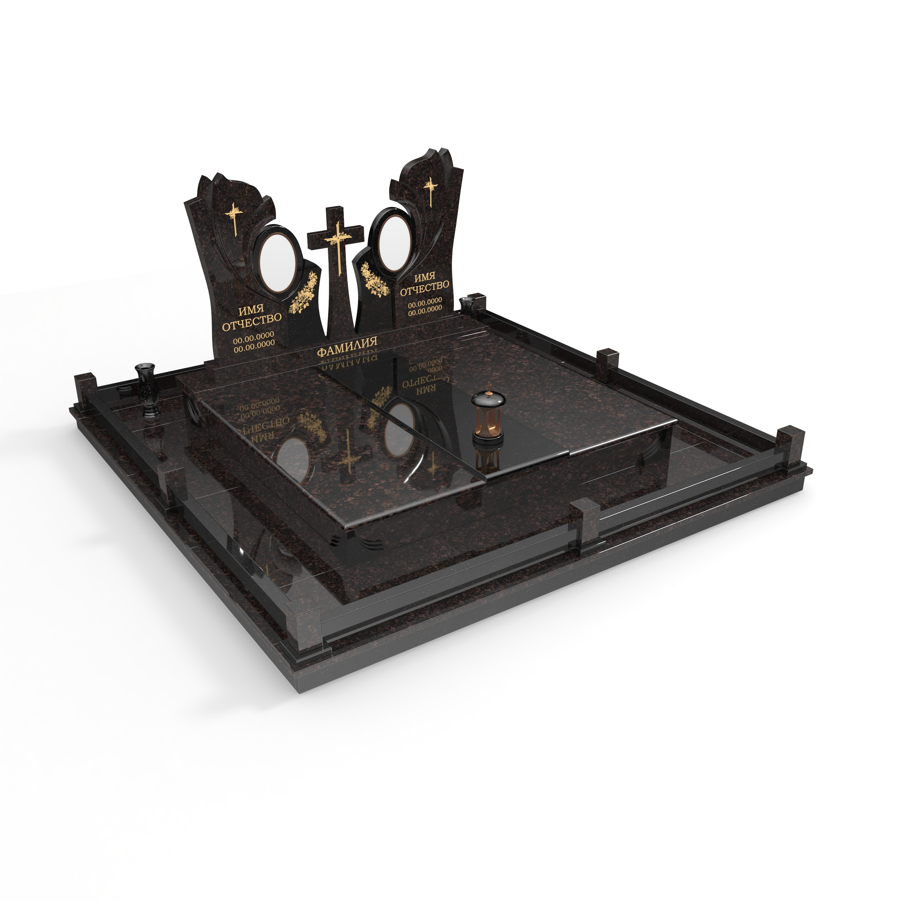
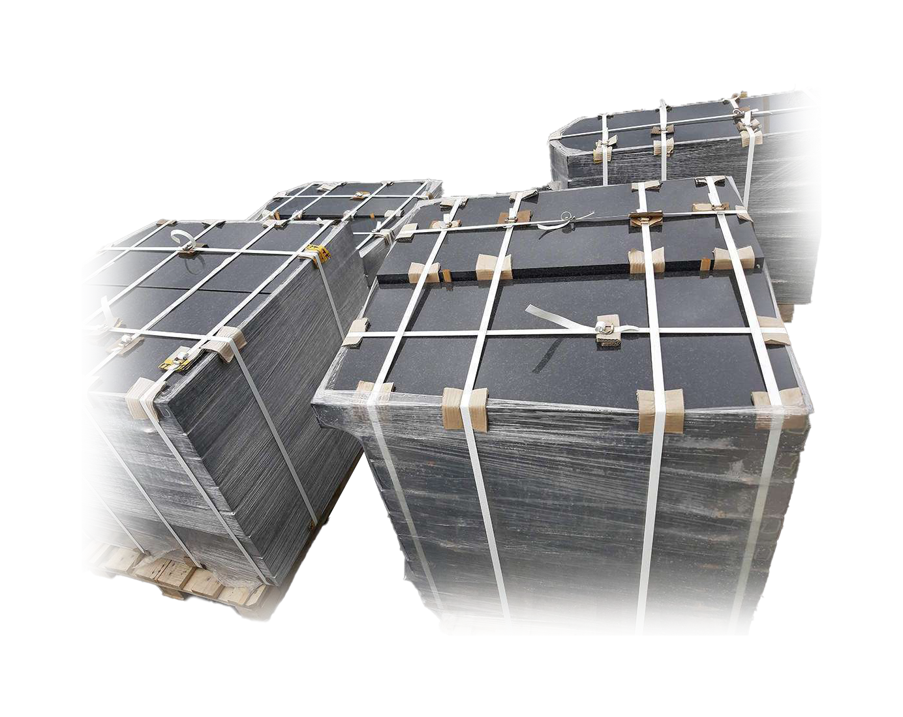
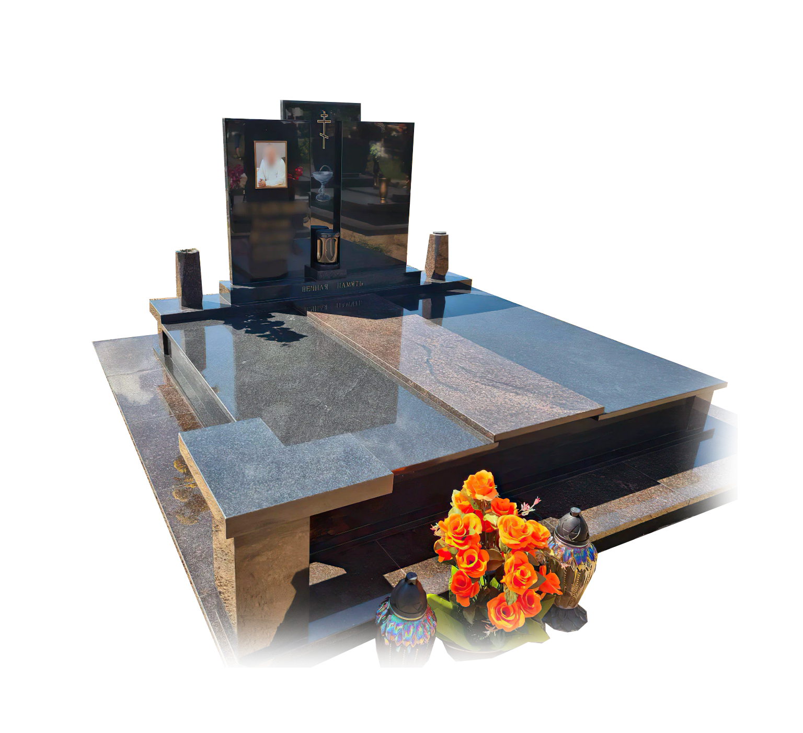

Нет ничего более болезненного, чем потеря близкого человека. Наша компания понимает, что каждая утрата уникальна и причиняет боль. Мы не можем вернуть тех, кого вы потеряли, но мы можем помочь сохранить их память. Мы создаем памятники, которые будут напоминать вам об ушедших, оставляя теплые воспоминания в сердцах близких и друзей. Позвольте нам помочь вам сохранить их память нашими красивыми и долговечными изделиями, которые будут служить вам всегда.
Память

Разработаем
Создайте незабываемый памятник для своих близких с помощью нашей услуги 3D моделирования. Мы используем передовые технологии, чтобы воссоздать каждую деталь, создавая уникальный и неповторимый памятник. Наши эксперты внимательно выслушают ваши пожелания и помогут создать дизайн, который отразит индивидуальность и память о вашем близком. Создайте вечную память с помощью 3D моделирования памятников от нашей команды.

Изготовим
Наш производственный процесс начинается с тщательного выбора камня, который мы используем для создания памятников. Мы работаем только с высококачественным гранитом, чтобы гарантировать долговечность и красоту наших изделий.
Как только мы выбрали подходящий камень, мы начинаем его обработку. Сначала мы режем камень на нужные размеры и форму, используя специализированные станки. Затем мы начинаем процесс обработки, включающий шлифовку и полировку. Это важный шаг, потому что он определяет окончательный внешний вид памятника.
Мы уделяем особое внимание деталям, чтобы создать памятники, которые будут надежными, красивыми и уникальными.

Установим
Когда ваш памятник готов, наступает время установки. Наша команда профессионалов заботится о каждой детали, чтобы убедиться, что памятник будет установлен крепко и безопасно. Мы проведем полную подготовку места установки, чтобы обеспечить правильную поддержку памятника. Кроме того, мы заботимся о том, чтобы окружающая местность была защищена во время установки, и после ее завершения мы приводим место в порядок, чтобы оно выглядело ровно так, как было до установки памятника. Мы понимаем, что установка памятника может быть эмоционально сложным временем, и мы делаем все возможное, чтобы облегчить этот процесс для вас и вашей семьи.